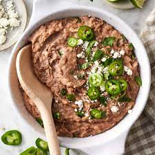

Refried Beans

These refried beans are perfect if you don't like the canned ones and you're short on time. They're easy and delicious!
Ingredients
- Oil
- Garlic Cloves
- 2 Cans of Pinto Beans
- Seasonings
- Lime Juice
Steps
- Cook the garlic in a skillet.
- Stir in the beans and seasonings.
- Smash the beans with a potato masher, then squeeze lime juice over the beans and stir.